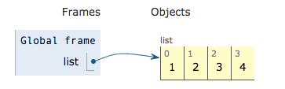

Dong Chen
A Python list is an ordered sequence of items which don’t have to be of the same type. Numbers, letters, strings, nested lists can on the same list.
List creation:
The plain way to create a Python list is just by statically writing the items between square brackets.
list ＝ ［ 1，‘a’， “hello”， sublist， Student(“Dong”) ］
List can also be created by list comprehensions. List comprehension is a description about what list should be created. It contains two parts: one is what the items in the list will be like, the other is how to get them.
list = [ x+y for x in ‘one’ for y in ’two’]
>>> list
>>> [‘ot’,’ow’,’oo’,’nt’,’nw’,’no’,’et’,’ew’,’eo’]
Iterating over a Python list:
list = [1, 2, 3, 4]
for item in list:
print (item)
>>>1
2
3
4
Python Code:
list = [1, 2, 3, 4]
for item in list:
print (item)
Assemble Code:
Then we can compile Python code by comand line:
python -m dis filename.py
The resulting assemble code is listed below:
1 0 LOAD_CONST 0 (1)
3 LOAD_CONST 1 (2)
6 LOAD_CONST 2 (3)
9 LOAD_CONST 3 (4)
12 BUILD_LIST 4
15 STORE_NAME 0 (list)
2 18 SETUP_LOOP 19 (to 40)
21 LOAD_NAME 0 (list)
24 GET_ITER
>> 25 FOR_ITER 11 (to 39)
28 STORE_NAME 1 (item)
3 31 LOAD_NAME 1 (item)
34 PRINT_ITEM
35 PRINT_NEWLINE
36 JUMP_ABSOLUTE 25
>> 39 POP_BLOCK
>> 40 LOAD_CONST 4 (None)
43 RETURN_VALUE
The execution process of iterating the list can be visualized on Python Tutorial.

SETUP_LOOP
SETUP_LOOP is to create a new block object on the top of the block stack which is maintained in the frame. The block object maintains the address of the first instruction should be executed when the block pop out. Here is INSTR_OFFSET()+oparg = 21+19 = 40. The block object also maintians the the block type which is acturally the operation to create new blocks: SETUP_LOOP, SETUP_EXCEPT, SETUP_FINALLY. Here is SETUP_LOOP.
GET_ITER
GET_ITER is to get the iterator object for whatever object on the top of the stack. Each Python object type has its own iterator object. PyObject_GetIter() is first to get the type object from the TOP object and then get its iterator object.
The core function of GET_ITER is
PyObject * PyObject_GetIter(PyObject *o) {
PyTypeObject *t = o->ob_type;
f = t->tp_iter;
PyObject *res = (*f)(o); /* list_iter() */
return res;
}
FOR_ITER
FOR_ITER will first call next() function of iterator, if returned object pointer is still a iterator object(not NULL), then push it to stack, CONTINUE to execute the next operation. if the returned pointer is NULL, it means the iterator has reached the end, and pop the iterator object out and jump by the offset of its argument to exit the iteration. HERE is 11.
x = (*v->ob_type->tp_iternext)(v) /* listiter_next() */